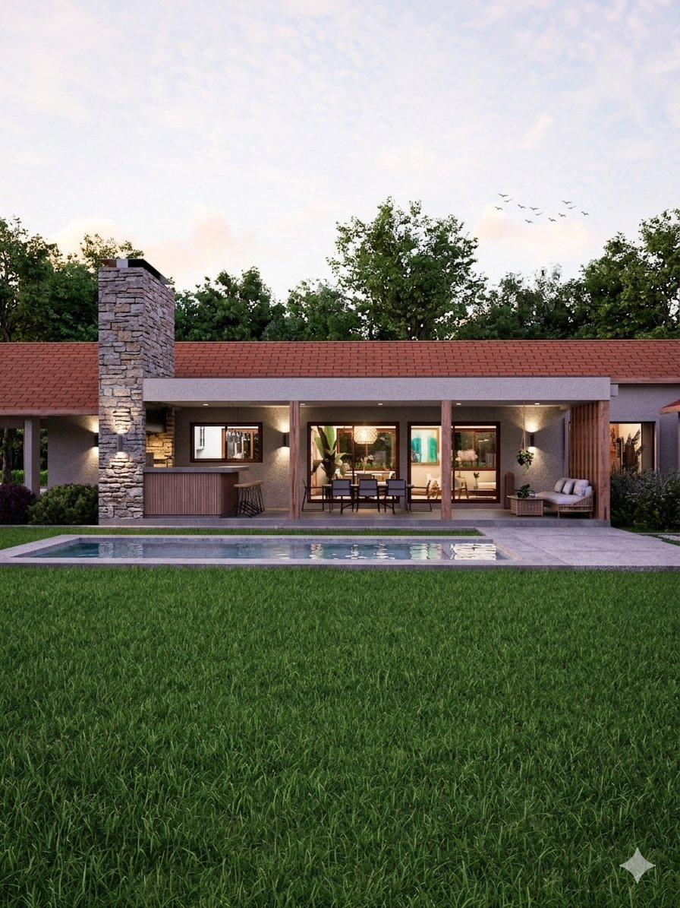
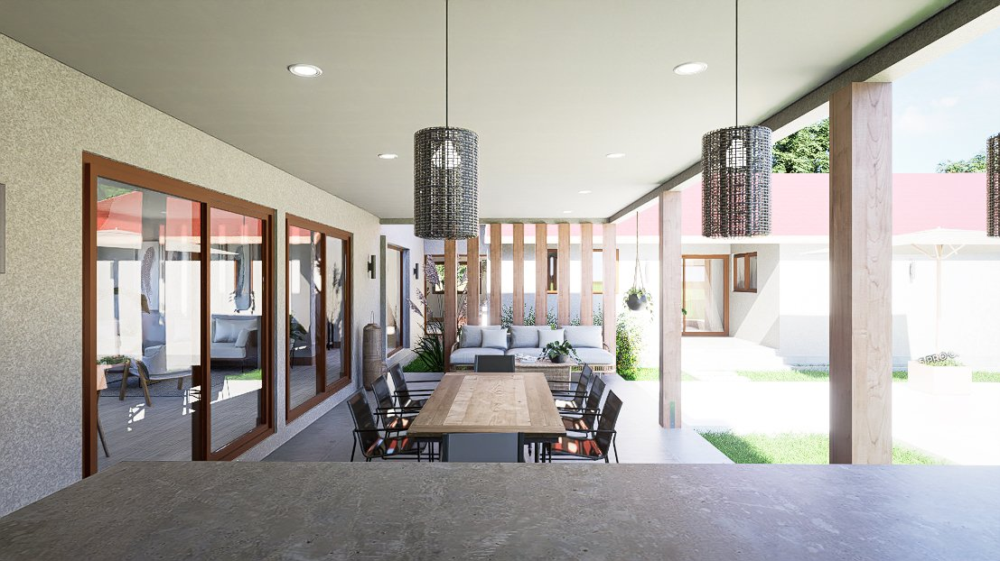
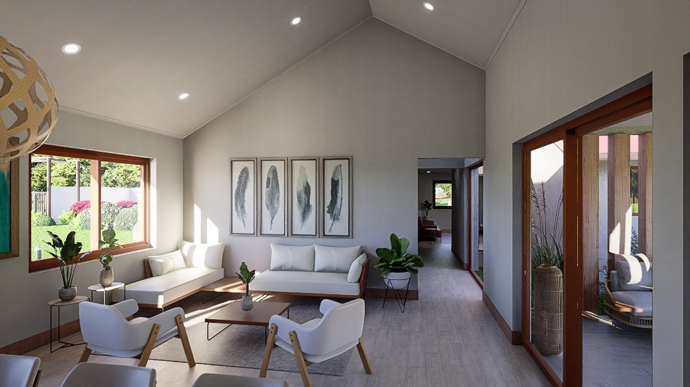
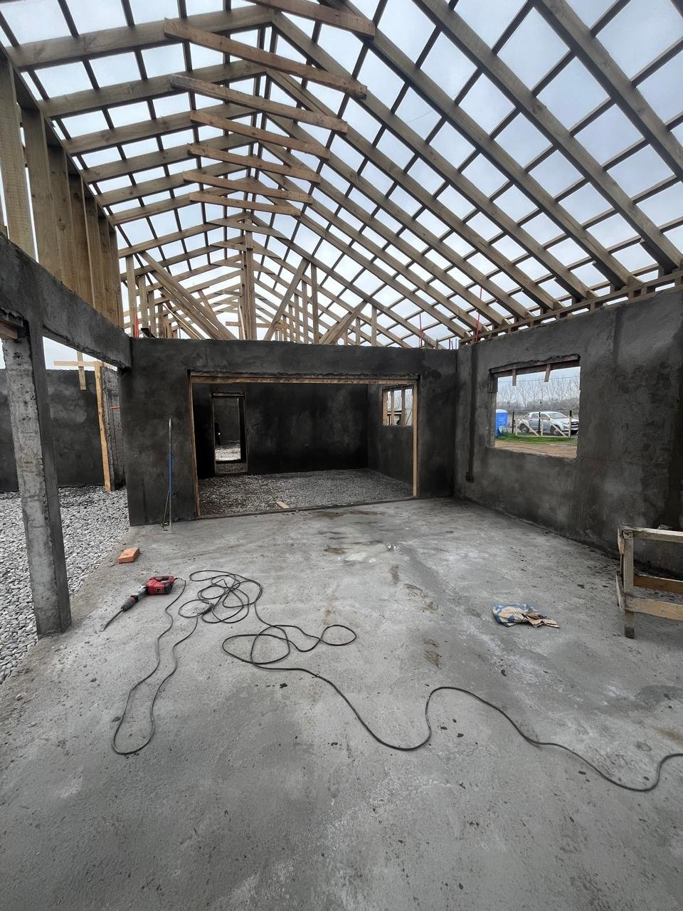
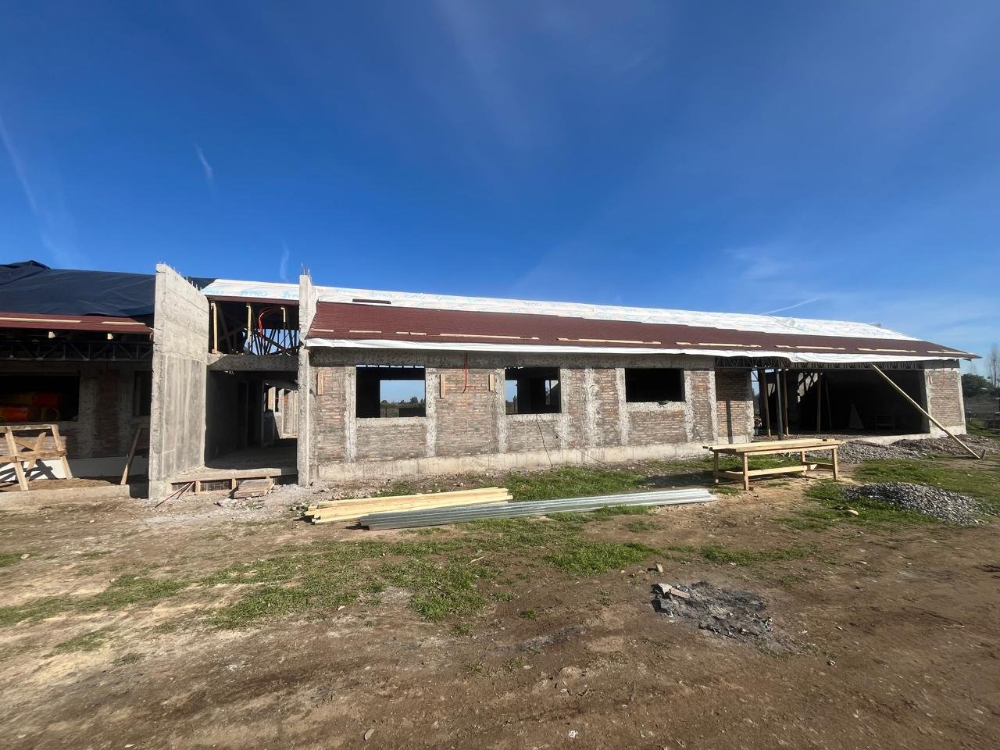

Ficha A-108 · Vivienda unifamiliar
Una casa de un piso de estilo campo con líneas contemporáneas, en el loteo Fundo Santa Clara de Talca, con quincho incorporado y actualmente en obra.






Casa Levante se emplaza en un terreno de 5.000 m² dentro del loteo Fundo Santa Clara, en Talca, y responde al encargo de una vivienda de un piso con un lenguaje de casa de campo reinterpretado con líneas contemporáneas. Con 303 m² construidos en albañilería reforzada, el proyecto se organiza en un volumen alargado bajo una techumbre de tejas de alta pendiente, con un cuerpo saliente en piedra que aloja la chimenea.
Un quincho techado, integrado al cuerpo principal de la casa y conectado visualmente con la piscina y el jardín trasero, extiende la vida social hacia el exterior sin perder la protección de la techumbre. Hacia el acceso, el mismo lenguaje de piedra y estuco se repite en un porche cubierto sobre pilares de madera, que da la bienvenida antes de llegar a la puerta principal.
Al cierre de esta ficha, la obra se encuentra en construcción: la estructura de muros de albañilería y la techumbre de madera ya están montadas, y el proyecto avanza hacia sus terminaciones interiores y exteriores.